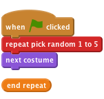
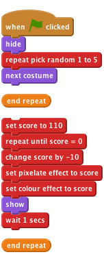
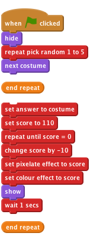
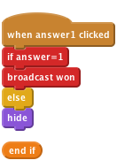
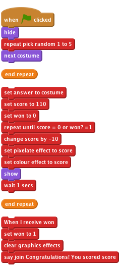

Level 3
What's That
Introduction A random object is shown on the blackboard, all distorted. You have to guess what it is by clicking on the right picture below. The quicker you guess, the higher your score!

We want a few different pictures to show up on the blackboard.

Click the green flag.
Does the sprite show a different costume?
Click on it a few more times. Do you get different costumes every time? Sometimes you’ll get the same costume twice in a row, but that’s OK. You’ll also notice that you can see the sprite flicker as it changes costume. We’ll fix that in the next step. Save your project
Let’s now make a picture distorted when it appears, and become clearer over a few seconds.
We’ll use a score variable to control how much distortion there is. If the score is high, there will be lots of distortion. As the score goes down, there will be less and less distortion. The score also acts as a timer, like on the Timer Scratch Card.
On the Variables palette, create a variable called Score.
Change the script to look like this:

You should add the hide block at the top and the set [score] to 110 block, and everything below it.
Click the green flag.
Does a random and distorted picture appear?
Does the distortion get less in stages?
Does the score go down as the picture becomes less distorted?
Do you get an undistorted image when the score reaches zero?
Do you still get a different picture every time you click the green button?
Save your project
Try changing the starting score and how much it changes each time around the loop. How does this change how the picture looks? Does it make it harder or easier to spot what the picture is?
Try some different graphic effects from the pull-down lists. How do they change the difficulty?
So far we’ve got our random picture appearing slowly, and a score which decreases over time, but how do you win the game? We’ll add some sprites at the bottom of the screen for the player to click on. If they click on the right one, they win the game. If they click on the wrong one, that sprite disappears and the game carries on.
First, we need to know what the right answer is.

Now we need to add the sprites that the player can click on.
Now we want to have each sprite respond to being clicked and do something depending on whether its the right answer or not.

Click the green flag.
When you test the game, you can use the answer monitor on the stage to tell what the right answer is. That’s good for testing.
What happens when you click on the right answer?
What happens when you click on the wrong answer?
What happens to the wrong answer when you start a new game?
The test shows up two problems. First, wrong guesses don’t reappear when the next game starts. Second, the score doesn’t stop going down when we get the right answer.

To fix the second problem, we need to stop the question sprite’s repeat until loop when the player clicks on the right answer. We’ll use a new variable to do that. We’ll set it to zero when the game starts and set it to one when the game is won. We’ll make the repeat until loop stop when either the score reaches zero OR the game-winning flag is set to one.

Save your project
Well done you’ve finished the basic game!
There are more things you can do to your game though. Have a go at these challenges!
Change how difficult the game is.
Save your project
At the moment, each play of the game uses the same distortion. In Step 2, you might have tried some different distortions that work at least as well as the colour + pixelation we used.
Find some different distortions that work well.
Change the game so that each game uses a different distortion in the repeat until loop.
Hint: Try creating a new variable, called distortion to use. Set it to a random value at the start of the game. Use if blocks in the body of the repeat until loop to apply the correct distortion for this game.
Save your project
At the moment, each game is independent. Change it so that the game proceeds in several rounds. For instance, have one game take three rounds, so the player has to guess three pictures and can score up to 300 points.
Hint: You’ll need an extra variable to store the grand total across all the rounds. You’ll also need a loop to go through the different rounds.
Hint: You’ll also have to make the wrong guesses reappear at the start of each round. Perhaps you could use a broadcast message to do that?
Save your project
As you go through different rounds, make the game harder each time.
Does each round need to score the same? Should you get more points for guessing quickly in the later, more difficult rounds?
Hint: How will you know which round you’re in? How can you use that to change the difficulty and the score?
Save your project
Instead of using a fixed number of rounds, keep playing the game until the player doesn’t get a picture right. This probably only works if the game gets harder in later rounds.
Save your project
Rather than always making the game harder, make the game adjust the difficulty depending on the skill of the player. If they get the right picture quickly, make the next game a bit harder. If they don’t get the right picture, or only get it late, make the next game a bit easier.
This idea only really works if you don’t add up someone’s score over several rounds.
Save your project
Keep track of the highest score. If someone manages to beat it, ask for their name and update the highest score. Make sure the highest score, and the name of the person who scored it, are displayed.
Save your project
At the moment, there’s no penalty to just clicking on all the answer sprites as quickly as you can. Change the game so that the score goes down a bit every time you make an incorrect guess.
Does this make the game better?
Save your project
Well done you’ve finished, now you can enjoy the game! Don’t forget you can share your game with all your friends and family by clicking on Share on the menu bar!